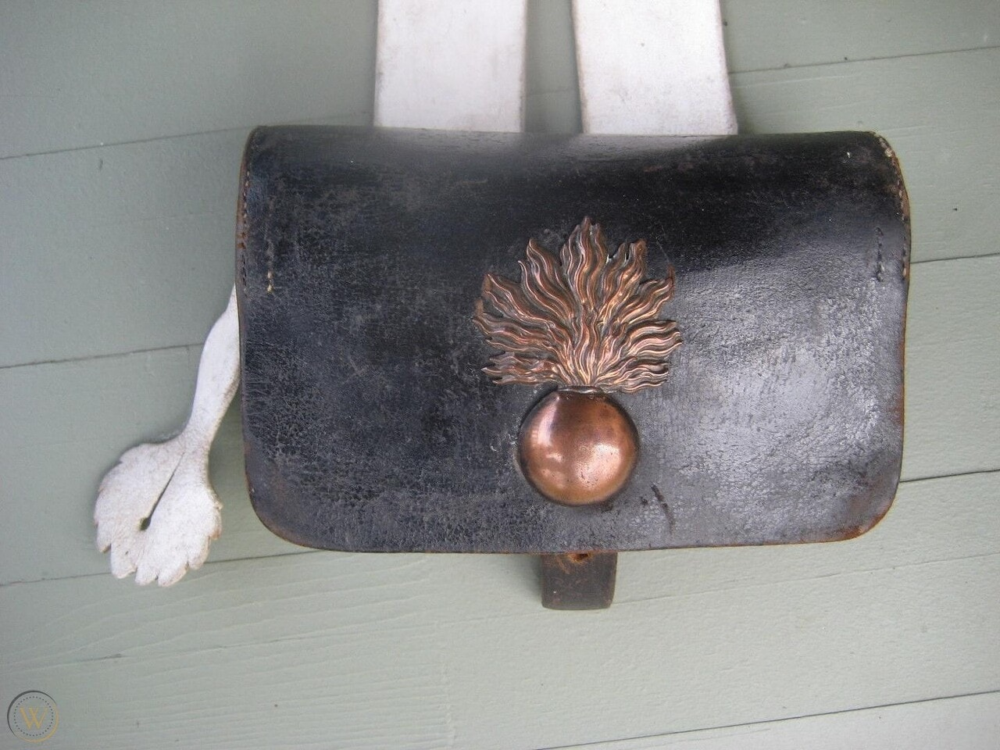
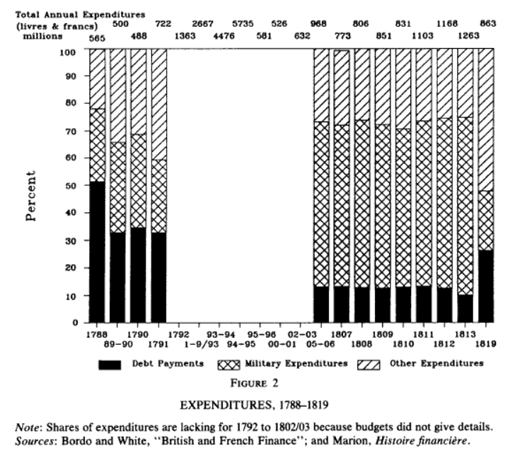
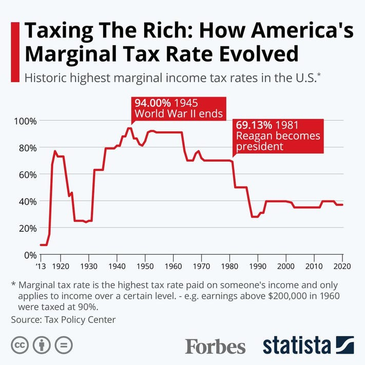
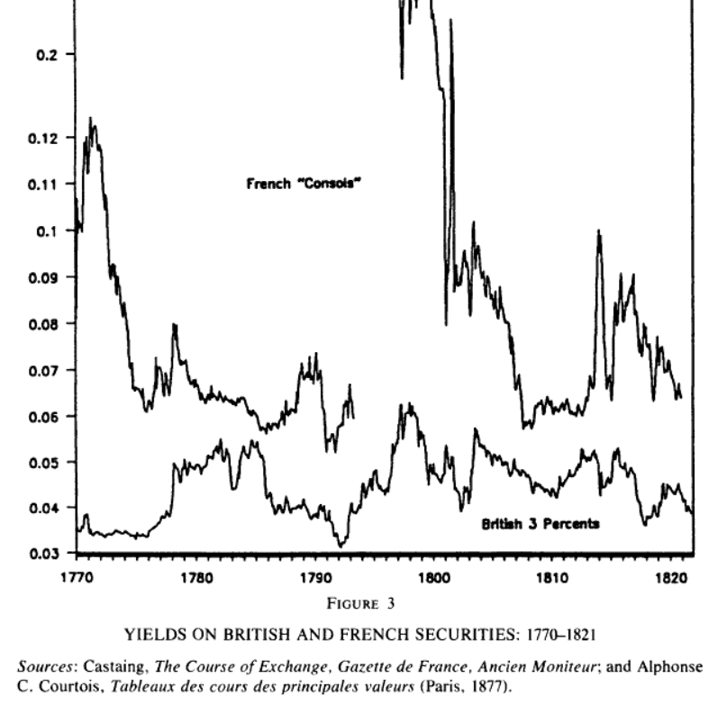
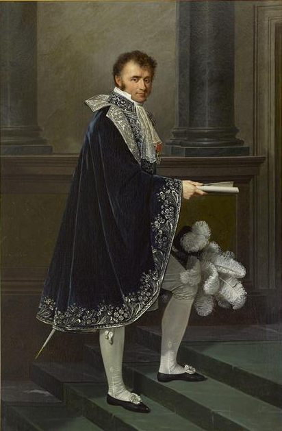
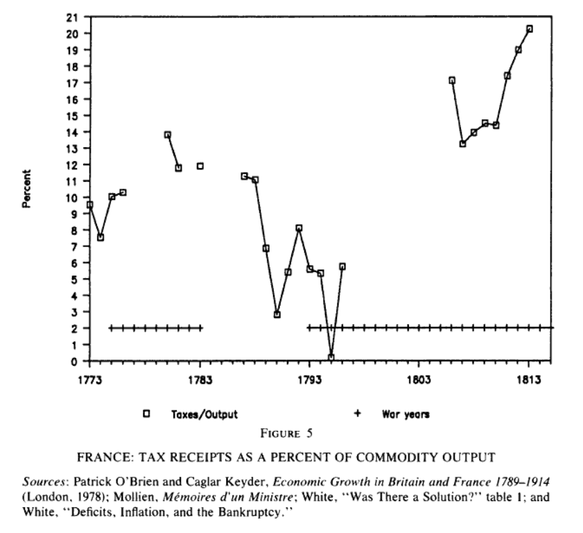
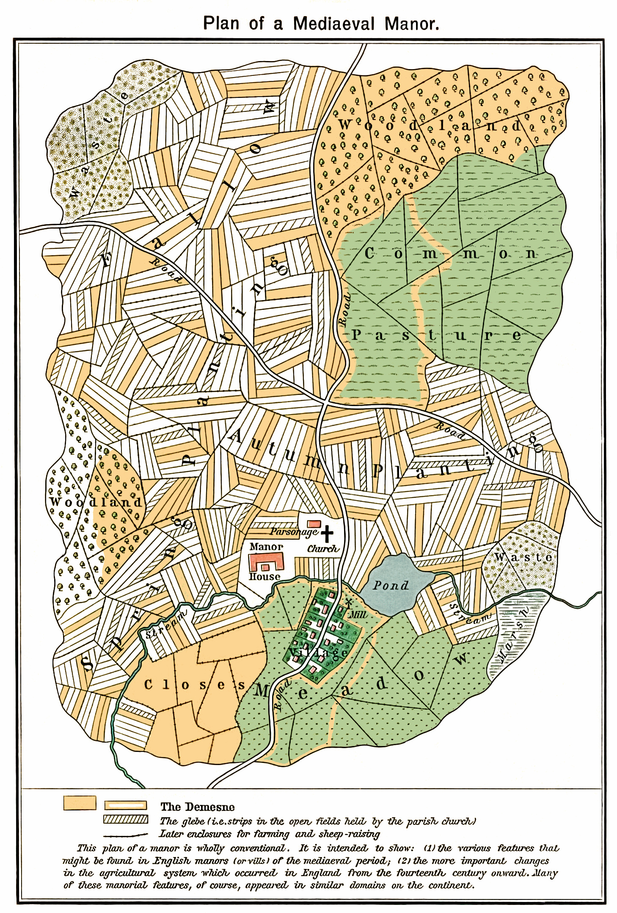

캡틴 아메리카와 기획 부동산 - 1813년 나폴레옹의 전비 마련
게시: 2022-03-07T06:30:49+09:00
당시 병사 하나를 입히고 배낭이니 잡낭(giberne) 같은 각종 장구류를 갖추는데 157프랑이 들었고, 머스켓 소총으로 무장시키는데 추가로 100프랑이 들었습니다. 이런 식이라면 20만 병력을 갖추는데 약 5천1백만 프랑이 들어갑니다. 뿐만 아니라 거기에 포병대와 기병대도 편성해야 하고 급여도 지급해야 했으므로 실제로는 훨씬 더 많이 들어갔습니다. 참고로 나폴레옹이 1798년 약 2만5천의 병력을 이끌고 이집트 원정을 떠날 때 추정된 필요 예산이 약 9백만 프랑이었습니다. 이건 약 5천만 프랑으로 추산되는 해군 함대 비용을 제외한 예산이었습니다. 1인당 360프랑이 들어간 셈이지요. 15년 동안에 인플레가 있었을테니 실제로는 인당 400프랑 이상 들었을 것입니다. 또 비슷하게 참조해볼 수 있는 수치는 1806~1807년 프로이센 및 러시아와 싸웠던 제4차 대불동맹전쟁의 비용입니다. 이때 약 30만의 병력을 동원했던 프랑스의 전비는 대략 2억1천3백만 프랑이었습니다. 약 60만의 병력을 동원했을 뿐만 아니라, 유례없이 많은 군수물자를 준비했던 1812년 러시아 원정에는 약 7억 프랑이 들었습니다.

(리들리 스콧 감독이 현재 촬영 중인 호아퀸 피닉스 주연의 Apple TV 오리지널 영화 "Napoleon"의 원래 제목은 "Kitbag"이었답니다. 여기서 kitbag은 당시 병사들의 표준 장비 중 하나로서, 어깨에 걸어서 허리춤에 늘어뜨린 잡낭을 뜻하는데, 당시 병사들 사이에서 실제로 유행하던 구절, 즉 '모든 프랑스 병사들은 잡낭 속에 원수봉을 넣고 다닌다' (Tout soldat français porte dans sa giberne le bâton de maréchal)에서의 잡낭을 영어로 kitbag이라고 번역한 것입니다. 우리 말로 의역하면 딱 어울리는 표현이 진나라 말기 농민 반란의 구호인 "어디 왕후장상의 씨가 따로 있더냐?"입니다. 실제로는 당시 잡낭의 이름은 프랑스군에서는 지베른(giberne), 영국군에서는 하버색(haversack, 네덜란드어에서 온 단어로서 원래는 귀리 자루라는 뜻)이라고 불렸습니다.) 참고로, 1814년 영국의 군비 지출은 해군에 1천만 파운드, 육군에 4천만 파운드, 동맹국들에 대한 보조금으로 1천만 파운드를 지출했고, 국채 이자 지급에만 3천8백만 파운드를 지출했습니다. 1815년 파리 조약에서 프랑스의 전쟁 배상금을 논의할 때 이야기된 환율은 1파운드에 약 24프랑이었으니, 이걸 그대로 적용하면 당시 약 25만 수준이었던 영국 육군은 9억6천만 프랑의 예산을 썼다는 이야기입니다. 물론 모병제였던 영국군의 급여가 프랑스군의 2배 수준인데다 영국군은 프랑스군과는 달리 보급품 조달에 비용을 많이 썼다고는 하지만, 정말 영국도 전비 지출이 심각하게 많았던 셈입니다. 아무튼, 이런 숫자들을 감안해보면 1813년 초에 나폴레옹은 1억 프랑 이상을 필요로 했습니다. 그리고 실제로 1813년 한 해에 대략 8억2천만 프랑을 총군사비로 지출했습니다. 1813년 프랑스 정부 지출 총액인 12억6천3백만 프랑의 65% 정도에 해당하는 금액이었고, 이는 러시아 원정이 있던 1812년의 약 7억 프랑보다 더 늘어난 금액이었습니다. 과연 이 돈을 나폴레옹은 어떻게 마련했을까요?

(프랑스 정부의 총 지출 중 군비 지출 비중입니다. 1812년 러시아 원정 비용만 7억 프랑이라고 했는데, 1812년 프랑스 전체의 군비 지출이 비슷하게 7억으로 나옵니다. 생각해보면 60만 대군 중 30만 정도만 프랑스군인데다 나폴레옹은 러시아 원정 비용의 상당 부분을 동맹국들에게 떠넘겼고, 대신 프랑스군은 당시 스페인에서도 15만 이상이 작전 중이었으니 플러스-마이너스 해보면 대충 그게 맞을 것 같습니다.) 그걸 보시기 전에 전쟁 비용 마련의 모범 사례라고 일컬어지는 제2차 세계대전 당시 미국의 방법을 살펴보시겠습니다. 당시 루스벨트 대통령의 정부 각료들은 심각한 인플레 없이 비용을 마련하기 위한 정석대로, 증세를 주장했습니다. 그러나 당시 미국은 대공황을 극복하기 위한 뉴딜 정책을 위해, 최고 소득세율이 이미 60%를 넘는 상황이었습니다. 증세만으로는 해결이 안되는 전쟁 비용을 감당해야 했던 재무성 장관이던 모건쏘(Henry Morgenthau, Jr.)는 국민들의 자발적 대출을 끌어내기로 했습니다. 즉 전쟁 채권(war bond) 판매를 채택한 것입니다. 정식으로는 E-시리즈 국채(Series E Bonds)라고 불리던 전쟁 채권은 전쟁 비용을 마련하기 위해 정부가 국민에게 판매한 것으로서, 10년 만기 채권이었습니다. 특이한 점이라면 이 채권에는 이자가 한푼도 붙지 않는다는 점이었는데, 대신 액면가의 75% 가격으로 팔았기 때문에 실질적으로는 10년간 연리 2.9%를 지급하는 효과를 냈습니다. 당시 시중 금리가 2~3% 정도에서 오갔다고 하니까, 인플레가 심하지 않다고 하면 이건 나쁘지 않은 투자였습니다. 그리고 무엇보다 미국에겐 헐리웃이 있었습니다. 미국 정부는 대중 문화계를 이용하여 '애국하려면 전쟁 채권을 사라'는 대대적인 캠페인을 벌였고, 여기에는 베티 데이비스나 리타 헤이워드 등 온갖 기라성 같은 스타들이 동원되었습니다. 덕분에 초기 판매 캠페인의 목표는 90억불을 모으는 것이었는데 가볍게 130억불을 판매할 수 있었습니다. 이런 전쟁 채권은 전황이 유리해질 수록 점점 쉽게 팔려서 1945년의 제7차 판매 캠페인에서는 불과 48일 동안 260억불을 판매했습니다. 미국 정부는 이런 식으로 8천5백만의 국민들에게 1850억불을 빌려서, 무분별하게 지폐를 찍어내지 않고도 전쟁 비용을 충당할 수 있었습니다.
(다들 기억하시겠지만, 캡틴 아메리카의 첫 임무도 바로 전쟁 채권 판매였습니다. 아마도 이 임무가 방패 휘두르며 나찌 병사 수십 명 때려눕히는 것보다도 미국의 전쟁 노력에는 더 큰 도움이 되었을 것입니다.)

(물론 캡틴 아메리카가 판매한 전쟁 채권을 상환하기 위해 미국은 1960년대까지 엄청나게 높은 소득세율을 유지해야 했습니다.) 나폴레옹도 미국과 비슷한 입장을 취했습니다. 일단 재산세 등의 직접세를 급격히 늘리자는 제안은 거부했습니다. 이런 상황일 수록 국민들의 지지가 중요했는데 증세만큼 국민 지지를 순식간에 떨어뜨리는 것이 없기 때문이었습니다. 그러면 채권을 발행하는 수 밖에 없었는데, 러시아 원정을 거하게 말아드시고 돌아온 황제가, 러시아-영국-프로이센 연합군의 침공에 대비하여 소년들을 모아 군대를 조직하려고 채권을 발행한다? 그런 채권이 잘 팔릴 리가 없었습니다. 그러면 예전에 국민공회가 아시냐 지폐를 찍어내듯이 지폐 윤전기를 돌렸을까요? 실제로 나폴레옹은 이 비상사태를 맞이하여, 재무장관인 몰리앙 백작(Nicolas François, Comte Mollien)의 항의를 무릅쓰고 일부 지폐 발행을 승인했습니다. 그러나 결코 아시냐 지폐처럼 무분별하게 찍어내지도 않았고, 프랑스 국채의 수익률도 최소한 1813년 중반까지는 그다지 급격히 올라가지 않았습니다. 즉, 프랑스 국채가 무분별하게 발행되지 않았고 사람들은 프랑스 국채의 부도 가능성이 예전과 크게 다르지 않다고 평가했습니다.

(18세기 후반~19세기 초반의 영국과 프랑스의 국채입니다. 영국 것은 '3-percents' (3% 표면 이자를 주는 영구채)라고 표시되어 있고, 프랑스 것은 'Consols' (consolidé, 통합 영구채권)라고 표시되어 있습니다. 보시다시피 실제 가치는 혁명 및 전쟁의 향방과 당시 정부의 신용도에 따라 변동이 있었습니다만, 1812년 러시아 원정의 대실패 뒤에도 의외로 프랑스 채권의 수익률, 즉 위험도가 급상승하지는 않았습니다. 급상승한 것은 1813년 후반 라이프치히 전투 이후 나폴레옹의 패배가 확정된 이후의 일입니다. 반대로 영국은 1805년 나폴레옹의 아우스테를리츠의 대승 이후 급등하는 것을 보실 수 있습니다.)

(몰리앙 백작입니다. 그는 상인의 아들로 태어난 비상한 두뇌의 소유자로서, 귀족이 아니어서 직위는 낮았음에도 혁명 전부터 사실상 프랑스 재무성에서 매우 중요한 역할을 하고 있었습니다. 하던 일이 시민계급으로부터 세금을 걷어 왕가를 위한 예산을 짜는 것이었으므로 당연히 혁명 이후 시민의 적으로 몰렸으나 아슬아슬하게 처벌을 면한 뒤 귀족도 아닌데 영국으로 망명을 했습니다. 그는 나폴레옹의 브뤼메르 쿠데타 이후에야 프랑스로 귀국했는데, 그의 뛰어난 능력을 높이 산 고댕(Martin-Michel-Charles Gaudin)의 추천으로 그는 결국 나폴레옹 밑에서 일하게 되었습니다. 1805년 재무장관이던 바르베-마르부아(Barbé-Marbois)가 사고를 쳐서 금융위기가 발생한 이후, 나폴레옹은 바르베-마르부아 대신 몰리앙을 재무장관 자리에 앉혔고 이후 계속 금융 부분에 있어서 나폴레옹의 두뇌로 활약했습니다. 몰리앙은 나폴레옹의 백일천하 때에도 나폴레옹에게 돌아올 정도로 나폴레옹의 심복이었으나, 워낙 능력이 뛰어났던 지라 부르봉 왕가의 루이 18세도 그를 데려다 쓰고 싶어 했습니다. 그러나 그는 계속 부르봉 왕가를 위해 일하는 것은 거부했습니다. 나폴레옹보다 11살 많았던 그는 92세까지 장수했고, 나폴레옹의 장관들 중에서 가장 늦게 사망한 사람이었습니다.)

(프랑스의 가치생산액(Commodity output) 대비 국가 세수의 비율입니다. 지난 편에서 보여드린 영국의 비율이 40%를 넘나들던 것에 비하면 상당히 낮은 편입니다. 의외로 프랑스 혁명 이전보다는 꽤 높은 편이라서, 이것만 보면 부르봉 왕가 때 농민들의 세금 부담이 더 적었다고 생각할 수도 있습니다. 그러나 그건 착시입니다. 혁명 이전에는 귀족들과 교회가 소유한 토지에는 세금이 면제되었으니까요. 귀족들과 교회가 농민들로부터 뜯어간 소작료는 세금으로 치지 않았을 뿐입니다. 결국 프랑스의 웅후한 국가 역량이 부르봉 왕가 때에는 일부 계층의 특권으로 인해 제대로 활용되지 못했다고 볼 수 있습니다.) 어떻게 그런 것이 가능했을까요? 요약하면 땅이라는 든든한 담보에 기반한 채권을 발행했습니다. 프랑스 사람들의 악몽 속에 생생히 남아있던 아시냐 지폐도 실은 토지를 기초자산으로 한 채권이었습니다. 교회와 귀족으로부터 몰수한 토지를 담보로 했지요. 그때 빼앗을 땅은 다 빼앗았을텐데, 또 어디서 땅이 생겼을까요? 돈이 급해서 집안 치부책을 열심히 뒤져보니 뜻밖에도 조상이 숨겨놓은 땅이 찾아지더라는 일은 드라마 속에서나 나오는 일인 줄 알았는데, 그런 일이 일어났습니다. 실은 나폴레옹이 재무부와 내무부의 직원들을 열심히 닥달한 결과 찾아낸 아이디어였습니다. 당시 프랑스 뿐만 아니라 영국이나 독일 등 유럽 각국은 아직 비도시화된 지방 공동체 사회가 주된 구성원으로 되어 있었습니다. 그리고 그런 전근대적 지방 공동체에 꼭 있는 것이 바로 공유지(commun)였습니다. 이건 중세시절 장원제도 때부터 내려온 각 지방의 목초지 또는 소작농지 같은 토지였는데, 대개 마을 농민들에게 빌려주고 약간의 임대비를 지방 공동체가 징수해왔었습니다. 나폴레옹은 이것에 손을 댔습니다. 일단 이 토지를 중앙정부가 몰수하되, 아무 보상없이 그냥 막무가내로 빼앗을 것은 아니었습니다. 평소 임대비로 받던 금액의 20배를 그 토지의 가치로 책정을 하여 판매를 하고, 대신 원래 주인인 지방 공동체에게는 매년 원래 받던 임대비를 중앙정부가 지급하는 방식이었습니다. 나폴레옹은 이런 식으로 3억7천만 프랑을 마련할 수 있을 것으로 자신했습니다.

(중세 장원의 토지 구획입니다. 상단 오른쪽에 common pasture라는 공유지가 보입니다.)
하지만 그렇게 많은 양의 토지가 순식간에 팔려나갈 리가 없었습니다. 원래 급매물로 내놓은 부동산은 헐값이 아니면 안 팔리지요. 여기서 나폴레옹, 정확하게는 그의 부하 직원들의 창의성이 빛납니다. 수익률 5%라는 매우 합리적인 가격이 책정된 확실한 자산이 있으므로, 그 자산을 기초로 채권을 발행한 것입니다. 결국 아시냐 지폐의 재래처럼 보이기는 합니다만, 한정된 자산에 대해 무한정 채권을 발행하지만 않는다면 사실 꽤 괜찮은 방식이었습니다. 이런 식으로 나폴레옹은 순식간에 필요한 자금을 마련할 수 있었습니다. 훨씬 나중의 일입니다만, 이 토지들은 결국 예정대로 다 팔렸을까요? 일단 1814년 4월까지는 1억2천4백만 프랑어치의 토지가 몰수되었고, 그 중 절반이 실제로 매각되었습니다. 그러나 그 중 실제로 수금이 된 것은 판매액의 절반 정도인 2천2백만 프랑 정도였습니다. 나폴레옹의 최종적인 몰락, 그리고 별로 영광스럽지 못한 이런 토지 몰수 역사에 대한 사회적 논의의 회피, 결정적으로 1871년 파리 코뮌 사건 때 많은 정부 기록이 화재로 소실되는 바람에 이 토지 매각의 최종 결과는 불분명합니다만, 나폴레옹이 퇴위할 때까지 실제로 팔린 토지는 대략 6천만~9천만 프랑 정도일 것으로 추정된다고 합니다. 이런 공유지 매각은 당시 프랑스 사회에는 어떤 영향을 끼쳤을까요? 프랑스보다 먼저 공유지를 매각한 사례가 있지요. 바로 영국의 엔클로저(enclosure) 사례입니다. 그때도 가난한 영국 소작인들은 생산 수단을 잃고 날품팔이 일꾼이 되거나 도시로 흘러가서 저임금 노동자가 되었습니다. 고대 그리스부터 오늘날 현대사회에서도, 언제나 토지의 매각은 빈부격차를 심화시키는 결과를 낳았습니다. 애초에 토지를 산다는 것은 여유가 있다는 뜻이고, 부자의 사전에 실물 자산은 언제나 사는 것이지 파는 것이 아니라고 정의되어 있거든요. 나폴레옹이 매각한 공유지도 대부분 자산에 여유가 있는 도시 부르조아지(bourgeoisie) 계급이 샀습니다. 가르(Gard) 지방의 후르끄(Fourques)라는 마을에서는 그 지방 농민들이 돈을 모아 317 필지(plot)의 공유지를 샀다는 기록도 있긴 합니다만, 그런 경우가 얼마나 되겠습니까? 게다가 그런 공유지 매각은 지방 공동체에게 있어서도 매우 불리한 결과를 낳았습니다. 원래대로라면 나폴레옹은 원래 받던 임대비, 즉 매각 대금의 5%를 매년 그 지방 공동체에게 지급해야 했습니다만 나폴레옹과 그 뒤를 이은 부르봉 왕가에게 그런 약속은 그야말로 공약(空約)에 불과했습니다. 위에서 언급된 가르 지방은 1814년에 원래 약속된 금액의 고작 16%에 해당하는 쥐꼬리만한 금액만 받았을 뿐이었고, 그나마 이후 1820년까지는 아무런 돈을 받지 못했습니다.
아무튼 이렇게 나폴레옹은 충분한 전쟁 비용을 마련할 수 있었습니다. 이제 어떤 일이 벌어질까요? Source : The Life of Napoleon Bonaparte, by William Milligan Sloane The French Revolution and the Politics of Government Finance, 1770-1815 by Eugene Nelson White A Tale of Two Currencies: British and French Finance During the Napoleonic Wars by Michael D. Bordo and Eugene N. White
https://journals.sagepub.com/doi/full/10.1177/0968344513483071 https://en.wikipedia.org/wiki/War_of_the_First_Coalition https://ericmackattacks.com/cinema/movie-reviews/mcu/captain-america-the-first-avenger/ https://www.investopedia.com/terms/w/warbonds.asp https://www.investopedia.com/terms/b/series-e-bond.asp https://en.wikipedia.org/wiki/War_bond https://movieposters.ha.com/itm/movie-posters/war/world-war-ii-propaganda-us-government-printing-office-1944-war-bond-poster-2975-x-3825-you-can-t-afford-to-mis/a/161706-51443.s https://en.wikipedia.org/wiki/Treaty_of_Paris_(1815) https://en.wikipedia.org/wiki/United_Kingdom_in_the_Napoleonic_Wars https://en.wikipedia.org/wiki/British_Army_during_the_Napoleonic_Wars https://en.wikipedia.org/wiki/Nicolas_Fran%C3%A7ois,_Count_Mollien https://en.wikipedia.org/wiki/Enclosure